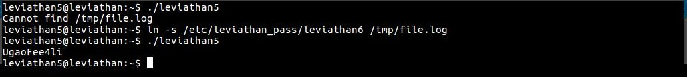

Leviathan Wargames!!!
In this level we see a file with setuid permissions. When we run it, we see that it is trying to access '/tmp/file.log' a file which does not exist. The following might do the trick. we soft link the password file to that particular file.
